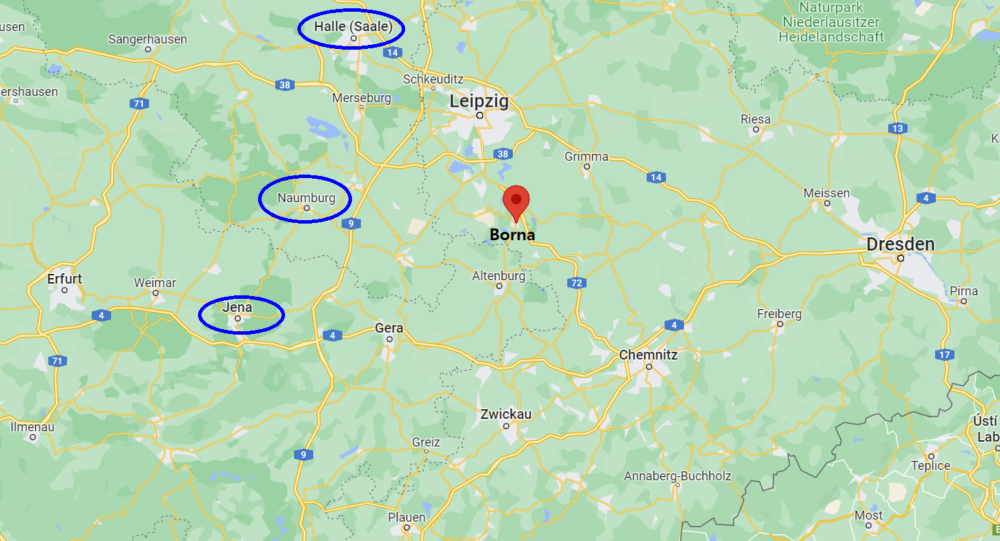
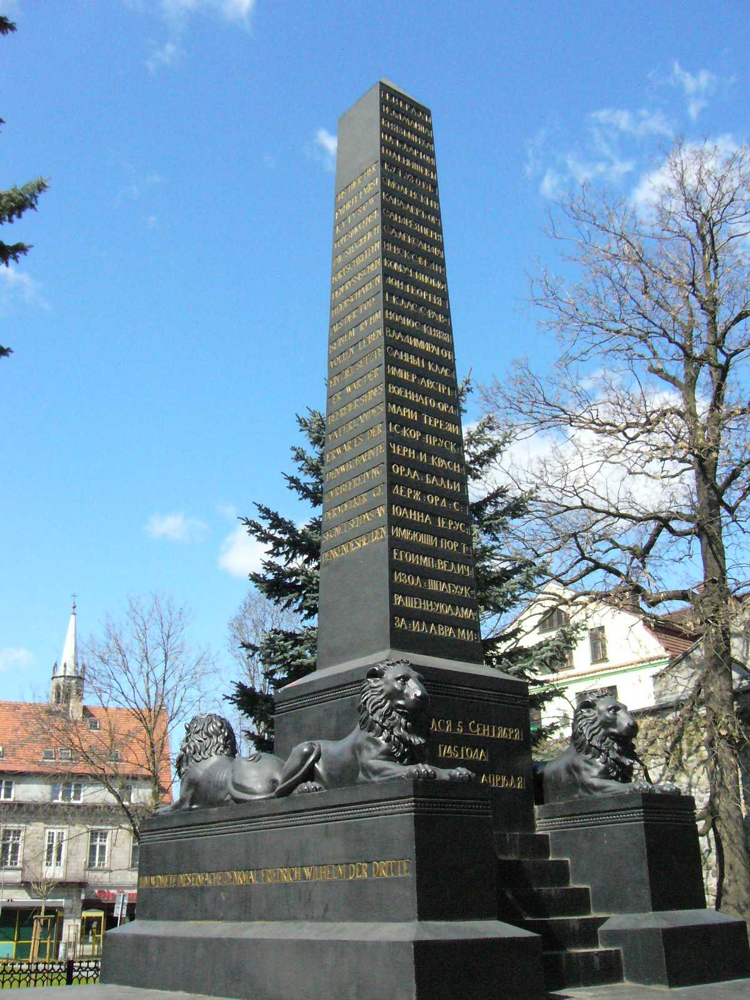
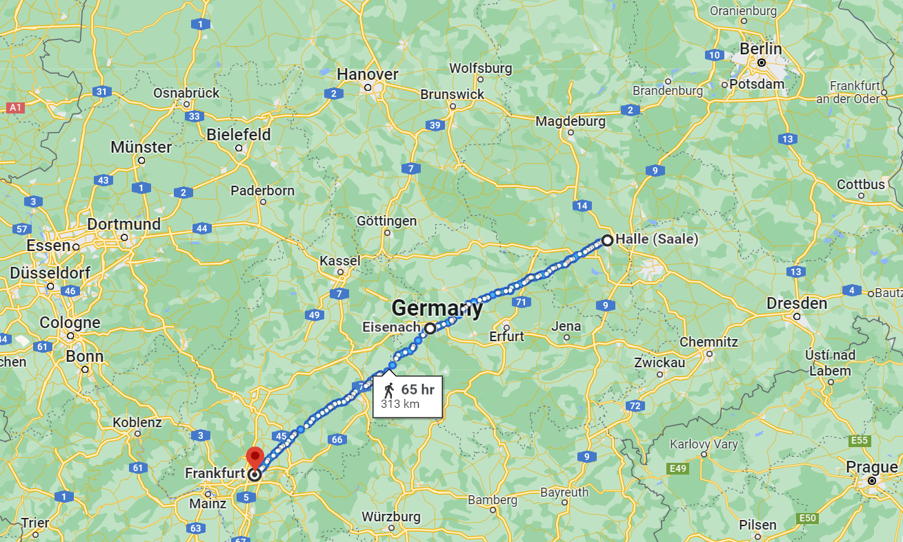
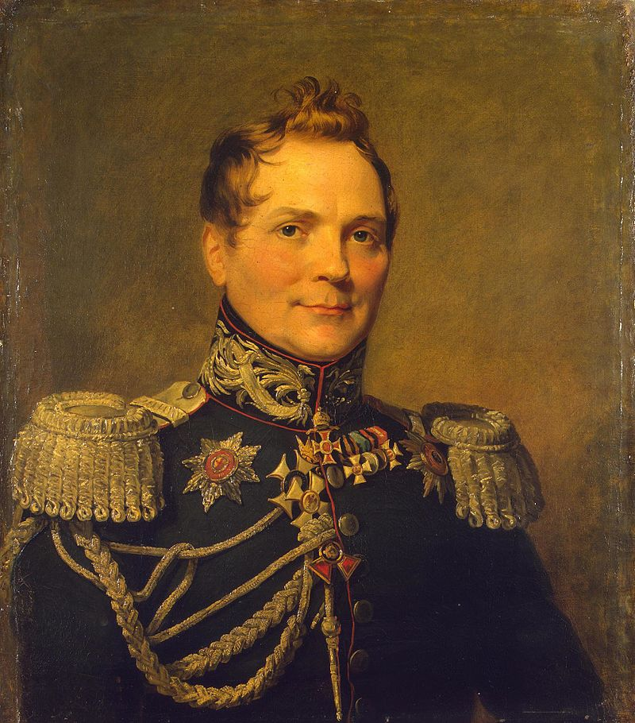
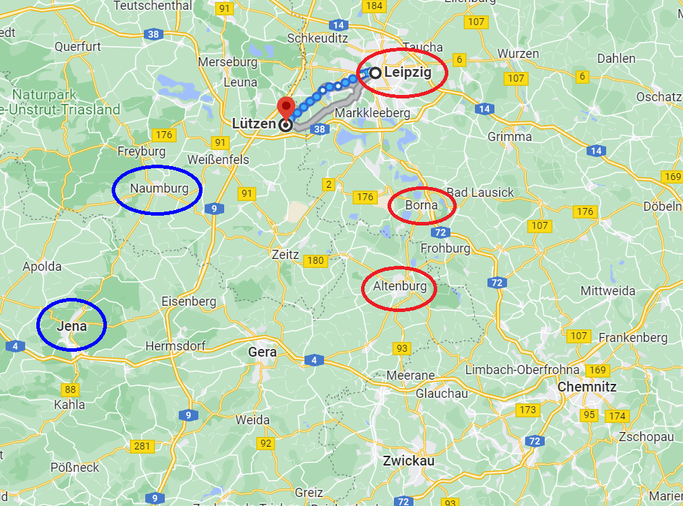

상책과 하책 - 두 천재 참모의 작전안
게시: 2022-08-08T06:30:33+09:00
나폴레옹이 잘러 강 서쪽에 나타났다는 소식은 프로이센군 수뇌부를 걱정시켰다기 보다는 흥분과 전율을 넘어 기대감에 차오르게 했습니다. 가장 흥분한 사람은 블뤼허 본인이었는데, 사실 블뤼허는 이 희대의 괴물과 어떻게 싸워야 하겠다는 작전 같은 것은 없었습니다. 프로이센군의 모든 작전은 블뤼허가 아니라 그의 참모들인 샤른호스트와 그나이제나우가 도맡아 짜고 있었기 때문이었는데, 그렇다고 블뤼허가 허수아비 노릇을 하는 것은 아니었습니다. 샤른호스트는 블뤼허를 매우 존중하고 있었는데, 블뤼허의 진짜 가치는 비상한 머리로 기가 막힌 작전안을 짜내는 것이 아니라 적과의 싸움에 임했을 때 정신적 구심점이 되어 부하들에게 용기와 투지를 불어넣고 사기를 고취시키는 것이었기 때문이었습니다. 그렇게 용기와 투지가 넘쳐나는 프로이센군은 다가오는 나폴레옹을 기다리기보다는 더 전진하여 나폴레옹을 공격할 생각에 부풀었습니다. 이렇게 공세로 나갈 생각까지 한 것은 드디어 밀로라도비치가 이끄는 러시아군 본대의 선봉이 드레스덴까지 왔기 때문이었습니다. 그 뒤를 토르마소프의 본대가 뒤따르고 있었으므로, 연합군 좌익인 블뤼허와 우익인 비트겐슈타인은 드레스덴의 다리, 즉 엘베 강을 넘어 탈출할 퇴로 걱정은 그들에게 맡기고 공격에 나설 수 있다고 생각한 것입니다. 그러나 러시아군 본대는, 좀 더 정확히 말해 쿠투조프는 생각이 달랐습니다. 그는 여전히 방어전에 더 중점을 두고 있었습니다. 그는 나폴레옹이 1806년 제4차 대불동맹전쟁 때처럼, 분산된 연합군의 좌익을 파고 들어 그 쪽부터 돌돌 말아올리는 형태로 공격해올 것이라고 우려했습니다. 그에 대한 대응으로, 그는 블뤼허와 비트겐슈타인이 각각 켐니츠(Chemnitz)와 보르나(Borna)에 최대한 서로 가까운 위치로 집결하도록 명령하고, 유사시 밀로라도비치의 러시아군을 보내 지원하겠다고 했습니다. 그러나 어디까지나 그의 가장 큰 관심사는 드레스덴-분츨라우-브레슬라우-칼리쉬로 이어지는 러시아 본토와의 교통로 확보였습니다. 만약 전세가 불리할 경우 러시아군은 언제든 폴란드로 혹은 아예 러시아로 후퇴하여 나폴레옹을 유인할 수 있었고, 설령 나폴레옹이 유인에 속지 않고 추격을 중단하더라도 러시아로서는 손해볼 것이 없었기 때문이었습니다.

(켐니츠와 보르나의 위치입니다. 왼쪽에 타원으로 표시된 도시들, 즉 예나, 나움부르크, 할러는 모두 잘러 강변에 위치한 도시로서 프랑스군이 막 점령하기 시작한 상태였습니다.) 하지만 원래부터 나이가 많고 건강이 좋지 않던 쿠투조프는 이때 이미 상당히 병세가 심한 편이었습니다. 4월 18일 쿠투조프와 알렉산드르는 함께 분츨라우에 도착했으나, 4월 21일 드레스덴을 향해 분츨라우를 떠날 때는 알렉산드르 혼자서였고 쿠투조프는 분츨라우에서 본격적으로 병석에 드러눕게 되었습니다. 알렉산드르는 물론, 쿠투조프의 부관인 톨(Karl Wilhelm von Toll)도 쿠투조프의 부재를 그다지 아쉬워하지 않았습니다. 쿠투조프가 빠지면서 러시아군 수뇌부도 좀 더 공격적인 자세를 취하게 되었고, 그들도 결국 엘베 강 서쪽에서 나폴레옹의 주력과 한판 붙을 것을 결의했습니다.

(쿠투조프는 병석에서 일어나지 못하고 4월 28일 분츨라우에서 그대로 사망합니다. 이제는 폴란드 도시 볼레스와비에츠(Bolesławiec)가 된 분츨라우에 있는 쿠투조프 추모비입니다. 무쇠로 만든 이 추모비는 프로이센 국왕 프리드리히 빌헬름의 명에 따라 1819년 세워진 것입니다.) 일이 이렇게 돌아가자 신이 난 것은 연합군의 장자방과 제갈공명인 샤른호스트와 그나이제나우였습니다. 이들은 머리를 맞대고 시시각각 들어오는 프랑스군의 정보를 접해가며 모든 경우에 대비한 작전안을 구상했습니다. 그 결과 나온 다소 장황한 작전안을 요약하면 결국 상책과 하책, 2가지였습니다. 상책, 즉 샤른호스트와 그나이제나우가 권고하는 작전안은 프랑스군이 잘러 강을 넘어올 경우, 절대 앉아서 기다리지 말고 적극적으로 나아가 나폴레옹의 군단들이 합세할 때까지 기다리지 말고 엘스터 강과 묄더(Mulde) 강사이에서 각개격파해야 한다는 것이었습니다. 이 작전안의 핵심은 '잘러 강 동안 인근에서 공격을 해야지, 절대 엘베 강 서안 인근에서 수비전을 펼쳐서는 안된다'라는 것이었는데, 이는 지리적 이점과 양측 병력의 특성을 십분 활용하기 위한 것이었습니다. 먼저, 잘러 강 인근에서 싸워야 승리를 한 뒤 프랑스군에게 큰 피해를 주기에도 유리했고 또 만약 패배를 한 뒤 연합군이 후퇴를 하기에도 유리했습니다. 만약 엘베 강 근처에서 강을 등 뒤에 두고 싸운다면, 만약 패배를 할 경우 아무리 드레스덴 등지에 다리를 확보하고 있다고 해도 강을 건너 후퇴하기가 쉽지 않을 것이고 틀림없이 대포 등의 주요 장비를 다 버리고 가야 할 가능성이 컸습니다. 그리고 양측 병력의 양적 질적 차이를 고려해도 그렇게 하는 것이 유리했습니다. 샤른호스트와 그나이제나우가 파악한 바로는, 잘러 강을 당장 건너올 준비가 된 프랑스군은 거의 13만, 그리고 잘러 강 인근까지 전개할 수 있는 연합군은 거의 9만5천에 가까왔습니다. 수적으로는 프랑스군이 유리했지만, 프랑스군은 징집된지 얼마되지 않은 신병들인데다 특히 기병대의 수가 절대적으로 부족했기 때문에 정찰과 추격, 평탄한 지역에서의 병력 전개가 원활하지 않았습니다. 따라서, 아직 집결을 완료하지 않은 프랑스군으로 하여금 잘러 강을 등지게 한 좁은 지역에서 싸우도록 강요하는 것이 가장 유리했습니다. 그러나 샤른호스트가 보기에 러시아군은 싸우려는 의지가 그다지 강해 보이지 않았으므로, 이 상책을 거부할 경우에 대비해 하책도 준비했습니다. 하책이라고는 하지만 이 작전안도 나폴레옹을 괴롭히기에는 충분한 것이었습니다. 즉, 나폴레옹이 잘러 강을 건너오면 그건 내버려 둔 채, 드레스덴에 위치한 밀로라도비치 등의 러시아 중앙군은 아예 엘베 강 동쪽으로 후퇴하고, 대신 블뤼허와 비트겐슈타인은 병력을 합하여 즉각 북쪽으로 진격하여 나폴레옹의 좌익 역할을 하는 외젠의 엘베 방면군을 격파하자는 것이었습니다. 이건 나폴레옹의 중앙군을 회피하고 상대적으로 약한 좌익의 외젠을 친다는 점에서 다소 부담이 적었습니다. 이렇게 하면 나폴레옹은 어쩔 수 없이 드레스덴에 병력을 떼어 엘베 강 너머의 러시아 중앙군을 견제하게 한 뒤, 외젠을 구하기 위해 주력을 이끌고 블뤼허-비트겐슈타인을 추격할 것이라는 것이 두 프로이센 참모의 예상이었습니다. 드레스덴 방면을 러시아 중앙군에 맡길 수 있다면, 모든 병력, 특히 기병대에 있어서 양적으로나 질적으로나 모두 우세한 블뤼허-비트겐슈타인의 부대는 외젠을 충분히 격파할 수 있었습니다. 그렇게 외젠을 격파한 뒤, 아이제나흐(Eisenach)-프랑크푸르트(Frankfurt) 방면으로 진격하면 나폴레옹의 후방을 노릴 수도 있었습니다. 만약 나폴레옹이 외젠을 버리는 패로 간주하고 그대로 엘베 강을 넘어 러시아 중앙군을 격파할 것을 우려할 수도 있으나, 후방 교통로를 블뤼허-비트겐슈타인의 대군이 위협할 수 있는 상황에서 나폴레옹은 절대 엘베 강을 건너는 모험을 하지는 않을 것이라고 샤른호스트와 그나이제나우는 판단했습니다.

(할러 근처에 주둔해있던 외젠을 격파하고 아이제나흐를 거쳐 프랑크푸르트까지 내달려 나폴레옹의 퇴로를 위협하겠다는 계획은 너무 프랑스군을 평가절하한 것 아닌가 싶을 정도로 대담한 것이었습니다.) 하지만 샤른호스트가 이 작전안을 들고 알렉산드르를 설득하기 위해 드레스덴으로 간 뒤, 그나이제나우는 4월 25일 프로이센의 총리인 하르덴베르크에게 이 작전안을 동봉한 편지를 보내며, '이 안이 채택되지 않더라도 최소한 우리는 정말 최고의 작전안을 짰었다는 것을 후세에 전하고자 이 작전안을 보낸다'라는 다소 불길한 소리를 했습니다. 그런 일말의 불안감은 그 날 아침에 그나이제나우가 러시아군의 참모장이라고 할 수 있는 톨과 만났기 때문이었습니다. 별로 좋지 않은 만남이었습니다. 샤른호스트는 알렉산드르를 비롯한 러시아군 거의 모두에게서 높은 평가와 존중을 받는 몸이었으나 그건 샤른호스트의 특출한 명석함에 기인한 예외적 경우였고, 대부분의 프로이센군 장성들, 가령 그나이제나우만 해도 오만한 강대국 행세를 하는 러시아군 장군들로부터 별로 우대를 받지 못했습니다. 그나이제나우는 알텐부르크(Altenburg)에 있던 블뤼허와 함께 톨을 만났는데, 무슨 말이 오갔는지 몰라도 그나이제나우는 톨이 군사학에 대해 잘 알지도 못하면서 건방지기만 한 인물이라고 혹평을 남겼습니다.

(쿠투조프가 가장 신뢰한 참모장, 톨(Karl Wilhelm von Toll)입니다. 나폴레옹보다 8살 어린 그는 에스토니아 귀족으로서, 그의 조상은 스웨덴에서 왔지만 사실 그 선대는 네덜란드 가문이었습니다. 1815년 파리까지 입성했고, 이후에도 군 생활을 계속하면서 1831년 폴란드 반란도 진압했습니다. 제대 후에는 고향인 에스토니아의 총독을 지냈으니 금의환향한 셈이지요.) 그리고 사실 샤른호스트와 그나이제나우의 작전안이 그다지 완벽한 것도 아니었습니다. 엘베 강에서 멀어질 수록 보급선이 늘어져서 연합군에게 불리하다는 쿠투조프의 판단은 딱히 틀린 말이 아니었으므로, 엘스터 강을 넘어 잘러 강 가까이 진격하자는 상책은 사실 꼭 상책이 아닐 수도 있었습니다. 특히 블뤼허와 비트겐슈타인이 합세하여 외젠을 먼저 치자는 하책은 글자 그대로 하책이었습니다. 이 작전안에 따르면 블뤼허-비트겐슈타인 군과 러시아 중앙군이 완전히 분리되는데다 그 사이에 나폴레옹의 주력이 밀고 들어오는 것을 전제로 삼고 있었습니다. 대적을 앞에 두고 스스로 두 동강으로 나누어지는 것은 그다지 상식적인 작전이 아니었습니다. 게다가 외젠을 잡기도 전에 블뤼허-비트겐슈타인 군이 덜컥 나폴레옹과 외젠에게 남북에서 포위되는 경우도 가능했습니다. 아무리 프랑스군에 기병대가 부족하다고 해도, 상대는 발 빠르기로 유명한 프랑스군이었습니다. 이런 사정 때문에, 결국 4월 말 나폴레옹이 언제든지 잘러 강을 넘을지 모르는 상황에서도, 러시아군과 프로이센군이 작전에 있어 합의한 것은 '나폴레옹을 공격한다'라는 것 외에는 아무 것도 없었습니다. 그래도 비트겐슈타인이나 빈칭게로더처럼 프로이센군과 함께 한달 넘게 작전을 펼친 러시아군 장군들은 프로이센 지휘관들과 사이가 나쁜 편은 아니었습니다. 비트겐슈타인도 블뤼허처럼 엘베 강 서쪽에서 나폴레옹과 싸운다는 것을 기본 방침으로 세우고 있었습니다. 비트겐슈타인은 자신의 바로 남쪽인 알텐부르그에 주둔한 블뤼허와 긴밀히 협조하며 프랑스군의 동태에 주목하고 있었는데, 나폴레옹이 에르푸르트에 도착했다는 소식을 듣고 예상보다 빠른 움직임에 꽤 놀랐습니다. 그는 라이프치히 인근에 자신의 병력을 모두 모으면서, 예나의 프랑스군이 잘러 강을 넘을 경우 그들과의 전투를 피하지 않을 것을 다짐했습니다. 그는 여러가지 시나리오를 고려하며 프랑스군과의 격돌 후보지들을 골랐는데, 대부분 라이프치히 인근이었습니다. 그리고 그 장소들 중에는 라이프치히 남서쪽의 작은 마을도 있었습니다. 그 마을의 이름은 뤼첸(Lützen)이었습니다.

(뤼첸과 알텐브루크, 라이프치히, 그리고 잘러 강변의 주요 도시들입니다.) Source : The Life of Napoleon Bonaparte, by William Milligan Sloane Napoleon and the Struggle for Germany, by Leggiere, Michael V
https://en.wikipedia.org/wiki/Karl_Wilhelm_von_Toll https://en.wikipedia.org/wiki/Boles%C5%82awiec